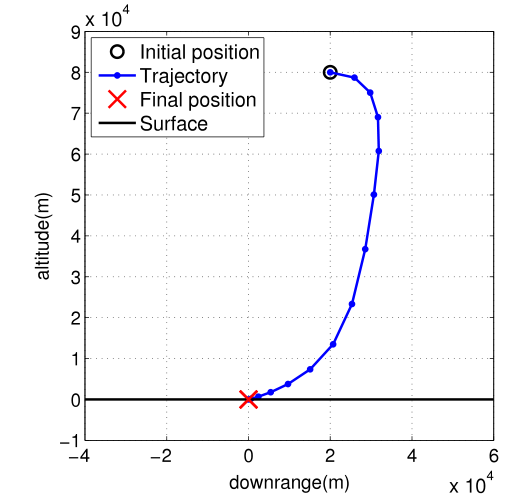
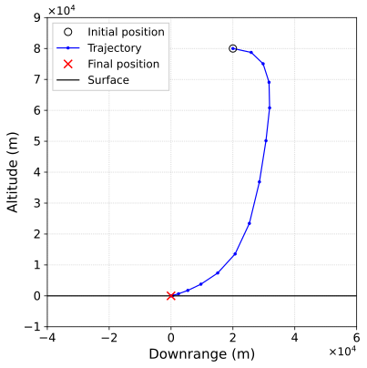
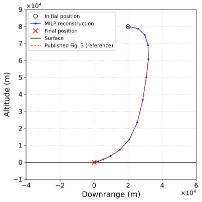
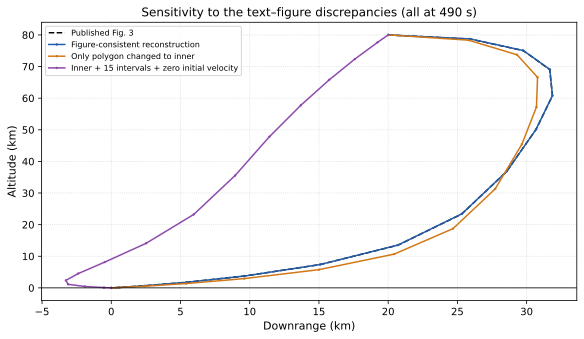
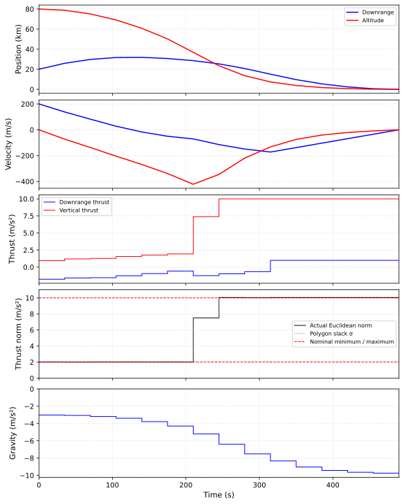
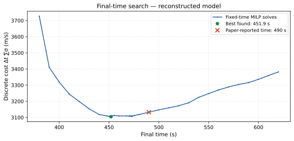

Discretize the dynamics
Use Appendix A.1’s zero-order-hold controls and freeze gravity at each interval’s initial altitude. Mass is constant and drag is zero, as in the Section 5 example. The controls are expressed as thrust acceleration.
A numerical reconstruction of the nonlinear-gravity soft-landing trajectory in Lossless convexification of control constraints for a class of nonlinear optimal control problems. The trajectory is generated by a mixed-integer linear program using the paper’s discretized dynamics, piecewise-linear gravity, and polygonal thrust constraints.
Both plots use the same axis limits and equal horizontal/vertical length scales. The vehicle initially travels rightward, then turns toward touchdown at the origin. Blue markers are discrete state points—not thrust vectors.


Comparison uses corresponding vertices recovered from the PDF’s vector path, not the authors’ raw data. The PDF has finite drawing precision (tens of metres at this scale). Reference trajectory coordinates are used only after optimization; they never enter the solver’s objective or constraints.

Use Appendix A.1’s zero-order-hold controls and freeze gravity at each interval’s initial altitude. Mass is constant and drag is zero, as in the Section 5 example. The controls are expressed as thrust acceleration.
Replace the inverse-square field with tangent-line gravity regions. Binary variables select the altitude region at each step. A disaggregated MILP encoding implements the same region selection as the appendix’s big-M formulation.
Minimize the sum of thrust slacks, with 32 linear inequalities approximating each norm constraint. SciPy’s HiGHS MILP solver certifies the fixed-time discrete solution to the requested tolerance; no trajectory-shaped initial guess is supplied.
Here u = φ/m is thrust acceleration, ĝ = (0, ĝy), and aj = (cos θj, sin θj) with θj = 2πj/32 for the figure-consistent outer polygon. The theorem concerns the original continuous-time problem under its stated hypotheses; it does not certify these numerical approximations or turn a general nonlinear program into a convex one.
These are substantive modeling choices, not cosmetic adjustments to force a curve to look right.
| Setting | Paper / evidence | This reconstruction |
|---|---|---|
| Boundary conditions | Section 5: r₀ = [2, 8] × 10⁴ m, target position and velocity zero. | Used as stated. |
| Initial velocity | Text says zero; Figure 4 starts at approximately +200 m/s downrange. | v₀ = (200, 0) m/s, following the plotted experiment. |
| Time grid | Text says N = 15 steps; Figures 3–4 show 15 state points, spaced about 35 s apart. | 15 states and 14 control intervals at 490 s. |
| Gravity | Figure 2 shows the field and PWL approximation; numerical constants and partitions are not tabulated. | Inferred g(h) = 9.78/(1 + h/100,000)² m/s² downward, with tangents at 0, 20, 40, 60, 80, 100 km; switches at 10, 30, 50, 70, 90 km. |
| Thrust polygon | Text specifies an inner 32-gon. Figure 4’s plateaus and slight norm overshoots are consistent with an outer 32-gon. | Outer 32-gon for the matching plot; the inner alternative is also solved below. |
| Final time | 490 s is reported as optimal after golden search. | 490 s fixed for the comparison. Our independent time search does not recover that optimum. |

All three cases use the same inferred gravity model and 490 s final time. The orange curve changes only the polygon scaling. The purple curve additionally uses zero initial velocity and 15 intervals, as stated in the text. None of the alternative runs uses Figure 3 as an optimization target.
Checks are computed from the full-precision solution, not from rounded display coordinates.

Controls and frozen gravity are drawn as zero-order-hold steps, starting at the interval boundaries. The thrust norm and polygon slack are shown separately. Component labels follow the actual downrange/vertical coordinates, rather than copying the apparently swapped thrust-component legend in Figure 4.

A 10 s scan over 380–620 s, followed by golden-section refinement around sampled local minima, finds a lower cost near 451.9 s for this reconstructed model. The main plot deliberately remains at 490 s for comparison with Figure 3. The time search is not a global certificate: a mixed-integer value function need not be unimodal. Recovering the authors’ original code or additional unreported settings would be needed to resolve this discrepancy.
These residuals validate Appendix A.2’s discrete updates, not exact integration of the smooth gravity field between nodes.
The equations, inferred settings, solver, validation data, and plot generator are included in the repository. No SciPy SLSQP trajectory or manually edited coordinate array is used.
python3 -m venv .venv
source .venv/bin/activate
python -m pip install -r scripts/requirements-figure.txt
python scripts/regenerate_figure.py
python -m unittest discover -s tests -vThe optional PDF-reference extraction step is documented in the reproduction notes. Regeneration works from the included reference JSON without reopening the PDF.
L. Blackmore, B. Açıkmeşe, and J. M. Carson III, “Lossless convexification of control constraints for a class of nonlinear optimal control problems,” Systems & Control Letters 61 (2012), 863–870. doi:10.1016/j.sysconle.2012.04.010. Original figure © 2012 Elsevier B.V.; reproduced here for scholarly comparison.